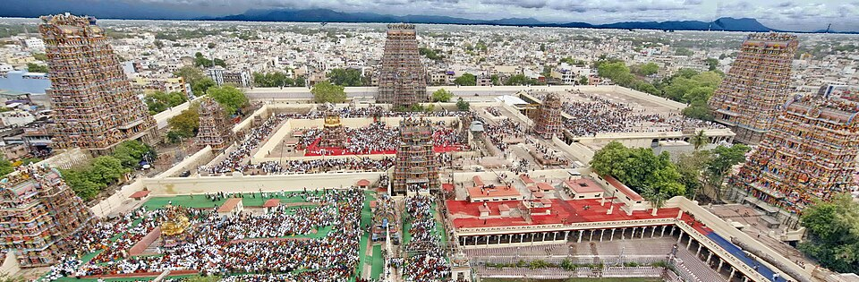

THE LIVING HERITAGE

Madurai sits on the banks of the sacred Vaigai river in southern Tamil Nadu and is one of the oldest continuously inhabited cities in the world, with documented references spanning over 2,500 years in Tamil Sangam literature. Its ancient street layout radiates outward from the Meenakshi Amman Temple in concentric lotus-petal squares.
Beyond the sacred skyline, the broader Madurai district encompasses rich agrarian plains, granite hills with 2,000-year-old Jain carvings at Samanar Malai, world-famous Jallikattu arenas at Alanganallur, Palamedu, and Avaniyapuram, and historic taluks like Melur, Vadipatti, Thirumangalam, and Usilampatti.
DISTRICT EXPLORATION MAP
Explore temples, Jallikattu grounds, hills, messes, and stays across Madurai district. Centered on [9.9252, 78.1198]. Click any pin for photo, details, and driving directions.
City attractions — Meenakshi Temple, Thirumalai Nayakkar Palace, Puthu Mandapam, Kazimar Mosque — are situated within convenient walking or auto-rickshaw distance. Sights across the taluks (Alagar Kovil, Pazhamudhir Solai, Alanganallur, Samanar Hills, and Vaigai Dam) are comfortably accessible via local buses and rental cars along NH44 and the Madurai ring roads.
October through March offers the most pleasant weather for temple trails and heritage walks. In January, the Pongal Jallikattu festivals at Avaniyapuram, Palamedu, and Alanganallur present unmatched rural energy, while April–May hosts the legendary Chithirai Thiruvizha.